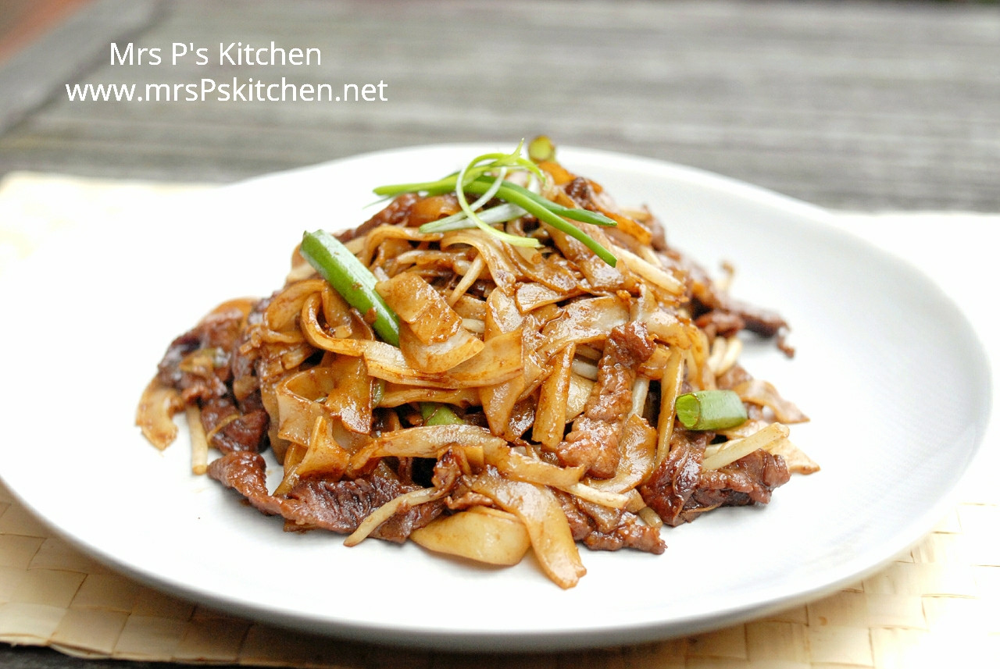
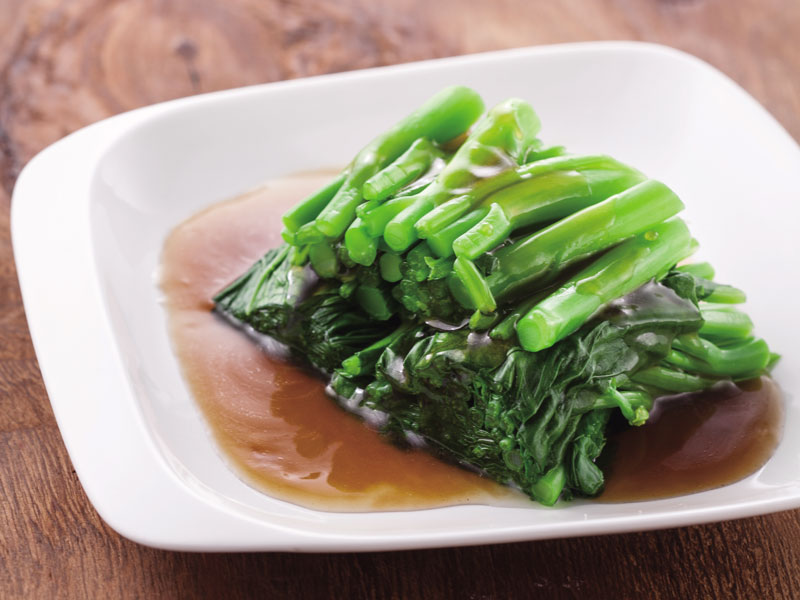
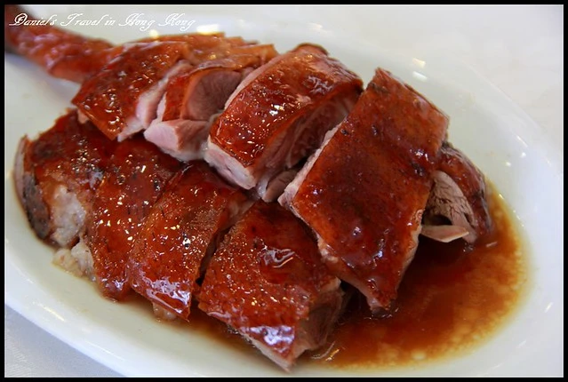

🍛 代表菜色介紹

白切雞
白切雞是粵菜中的經典名菜，以新鮮雞肉用鹽水簡單煮熟，保留雞肉鮮嫩多汁。配以薑蔥醬汁，味道清爽鮮美，肉質細嫩滑順，強調原汁原味，是粵菜清淡風味的代表。

乾炒牛河
乾炒牛河以河粉和嫩滑牛肉快炒，火候掌握得當，表面帶有香氣十足的「鑊氣」，口感滑嫩彈牙。此菜是粵菜中非常受歡迎的家常快炒菜，具有鮮明的地域特色。

蠔油芥蘭
蠔油芥蘭用新鮮芥蘭快炒後淋上鮮美的蠔油，保持芥蘭的鮮脆口感與自然清甜，味道鮮美清爽，是粵菜中不可或缺的蔬菜佳餚。

燒鵝
燒鵝是粵菜中的燒味代表，選用肥瘦均勻的鵝肉，經過獨特醃製與燒烤工藝，外皮脆香，肉質鮮嫩多汁，味道層次豐富，深受食客喜愛。